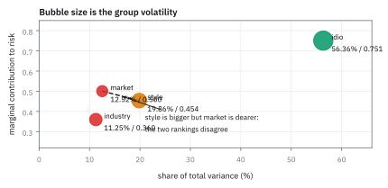
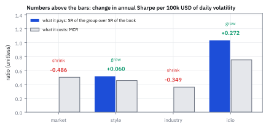

26.4 Decomposing Risk: Percentage of Variance, MCR, and Sharpe Sensitivity
แบ่งความเสี่ยงของพอร์ตเป็นกลุ่มได้สามแบบที่ตอบสามคำถามต่างกัน ใครใหญ่ ใครแพงเมื่อเพิ่มอีกนิด และควรขยายหรือหดกลุ่มไหน ซึ่งจัดอันดับไม่เหมือนกัน
พอร์ตหุ้นขนาดใหญ่ของโต๊ะหนึ่งเสี่ยงวันละ \$159,844 risk manager สั่งให้ลด รายงานแบ่งความผันผวนรายวันของกำไรขาดทุนเป็นสี่กลุ่ม market \$40,000 style \$70,000 industry \$50,000 และส่วนเฉพาะตัว \$120,000 นักวิเคราะห์เสนอให้ลดส่วนเฉพาะตัวก่อน เพราะมันใหญ่ที่สุด ถือส่วนแบ่ง variance 56% และแพงที่สุดเมื่อเพิ่มอีกนิด ควรทำตามไหม?
ลองตอบก่อนเปิดเฉลย
ไม่ควร ส่วนเฉพาะตัวแพงที่สุดจริง (MCR 0.751) แต่ก็ทำเงินมากที่สุด (Sharpe Ratio 1.6 ต่อปี) ทุก \$100,000 ของความผันผวนรายวันที่เพิ่มให้มัน ยก Sharpe Ratio ทั้งพอร์ต 0.272 กลุ่มที่ควรลดก่อนคือ market ซึ่งไม่จ่ายผลตอบแทนเลย แต่ขยับตามพอร์ตด้วย correlation 0.50 ลดมันแล้ว Sharpe Ratio ขึ้นในอัตรา 0.486 ต่อ \$100,000 และถ้า hedge market ออกหมด Sharpe Ratio ขึ้นจาก 1.5515 เป็น 1.7216
ภาพรวมก่อนลงสูตร
การอ่านสมการ factor model ทั้งพอร์ตให้ความเสี่ยงรวมเป็นตัวเลขเดียว ซึ่งตอบว่า “วันนี้เสี่ยงแค่ไหน” แต่ไม่ตอบว่า “ถ้าต้องลด จะลดตรงไหน” คำถามหลังมีสามแบบที่ฟังคล้ายกันแต่ไม่ใช่เรื่องเดียวกัน แบบแรกถามว่าความเสี่ยงไปกองอยู่ที่กลุ่มไหน แบบที่สองถามว่าถ้าเพิ่มกลุ่มหนึ่งอีกหนึ่งดอลลาร์ ความเสี่ยงของพอร์ตขึ้นกี่ดอลลาร์ แบบที่สามถามว่าการเพิ่มนั้นคุ้มไหม เมื่อนับผลตอบแทนที่กลุ่มนั้นให้ด้วย
สามคำถามมีสามตัววัด ส่วนแบ่ง variance ซึ่งกลายเป็น beta ของกลุ่มบนพอร์ต, MCR ซึ่งกลายเป็น correlation และ Sharpe sensitivity ซึ่งบอกทิศที่ควรเดิน รูปข้างล่างวางสามตัววัดของพอร์ตใน hook คู่กัน ดูว่ากลุ่มเดียวกันได้อันดับต่างกันแค่ไหนในแต่ละแผง หน้านี้จะสร้างทั้งสามตัวจาก covariance ของกำไรขาดทุนรายกลุ่ม แล้วดูว่าความชันผิดได้แค่ไหนเมื่อขยับไกล
รูป — สามตัววัดของกลุ่มเดียวกัน จัดอันดับไม่เหมือนกัน
ศัพท์ที่ใช้ในหัวข้อนี้
- Factor group
- การรวม factor ที่มีความหมายร่วมกันเป็นกลุ่มเดียว เช่น style ทุกตัว หรือ industry ทุกตัว ย่อรายงานร้อยบรรทัดให้เหลือไม่กี่บรรทัด ส่วนเฉพาะตัวนับเป็นอีกกลุ่มหนึ่ง และหุ้นกลุ่มหนึ่งก็นับเป็นกลุ่มได้
- Percentage of variance
- ส่วนแบ่งของ variance รวมที่กลุ่มหนึ่งรับผิดชอบ นับ variance ของตัวเองเต็ม ๆ บวกครึ่งหนึ่งของ covariance กับกลุ่มอื่น ทุกกลุ่มรวมกันได้ 100% พอดี ตัวที่ถูกอ้างบ่อยที่สุดคือส่วนแบ่งของส่วนเฉพาะตัว
- Marginal contribution to risk (MCR)
- ความผันผวนของพอร์ตขึ้นกี่ดอลลาร์เมื่อความผันผวนของกลุ่มหนึ่งเพิ่มหนึ่งดอลลาร์ ใช้ตอบว่ากลุ่มไหนแพงเมื่อเพิ่มอีกนิด
- Sharpe sensitivity
- Sharpe Ratio ทั้งพอร์ตเปลี่ยนเท่าไรเมื่อความผันผวนของกลุ่มหนึ่งเพิ่มหนึ่งดอลลาร์ บวกแปลว่าควรขยาย ลบแปลว่าควรหด
- Unpriced factor
- factor ที่ถือแล้วได้ความเสี่ยงแต่ไม่ได้ผลตอบแทนคาดหวัง Sharpe Ratio ของมันเป็นศูนย์ เป็นของที่ควร hedge ออก
- Hedge
- การเพิ่มตำแหน่งที่สวนทางเพื่อลด exposure ที่ไม่ต้องการ ในหน้านี้คือการลดตัวคูณขนาดของกลุ่ม market ลงจาก 1
สัญลักษณ์และหน่วย
| สัญลักษณ์ | ความหมาย | หน่วย |
|---|---|---|
| $\text{PnL}_i$ | กำไรขาดทุนรายวันที่กลุ่ม $i$ สร้าง | \$ ต่อวัน |
| $\mathbf V,\ V_{ij}$ | covariance ของกำไรขาดทุนรายกลุ่ม | (\$ พัน)² ต่อวัน |
| $v_i,\ v_{\rm tot}$ | ความผันผวนของกำไรขาดทุนของกลุ่ม $i$ และของทั้งพอร์ต | \$ พันต่อวัน |
| $x_i$ | ตัวคูณขนาดของกลุ่ม $i$ ตอนนี้เท่ากับ 1 | ไม่มีหน่วย |
| $p_i,\ m_i$ | ส่วนแบ่ง variance และ MCR ของกลุ่ม $i$ | ไม่มีหน่วย |
| $\text{SR}_i,\ \text{SR}_{\rm tot}$ | Sharpe Ratio ของกำไรขาดทุนกลุ่ม $i$ และของทั้งพอร์ต | ต่อปี |
ขั้นที่ 1 — covariance ของกำไรขาดทุนรายกลุ่ม
กำไรขาดทุนจาก factor ของพอร์ตคือ $\mathbf b^{\mathsf T}\mathbf f$ ถ้าแบ่ง factor เป็นกลุ่ม แล้วให้ $\mathbf b_{(i)}$ เป็น exposure ที่เก็บเฉพาะ factor ในกลุ่ม $i$ (ตัวอื่นเป็นศูนย์) กำไรขาดทุนของกลุ่มคือ $\mathbf b_{(i)}^{\mathsf T}\mathbf f$ และส่วนเฉพาะตัวเป็นอีกกลุ่ม นี่คือนิยาม ส่วนสูตรของ $V_{ij}$ มาจากกฎ covariance ของการแปลงเชิงเส้น
variance ของผลรวมคือผลรวมของทุกช่องของ $\mathbf V$ ไม่ใช่แค่แนวทแยง พอร์ตสี่หุ้นที่ถือ exposure momentum 13.8 กับ tech 1 แบ่งเป็นกลุ่ม momentum, tech และเฉพาะตัว ได้แนวทแยง 23.3289, 0.3025 และ 253.52 ช่องไขว้ของ momentum กับ tech คือ $13.8(1)(-0.01925)=-0.26565$ นับสองครั้ง รวมได้ 276.6201 เท่ากับความเสี่ยงรวมของพอร์ตนั้นพอดี
ส่วนเฉพาะตัวไม่สัมพันธ์กับ factor ตามข้อสมมติของ model แถวและคอลัมน์ของมันใน $\mathbf V$ จึงมีแค่ช่องแนวทแยง
ขั้นที่ 2 — พอร์ตในโจทย์ ความเสี่ยงรวม
โจทย์ให้อะไรมาบ้าง: ความผันผวนรายวันของกำไรขาดทุนรายกลุ่ม market, style, industry, เฉพาะตัว คือ 40, 70, 50 และ 120 พันดอลลาร์ correlation ระหว่าง market กับ style +0.25, market กับ industry +0.45, style กับ industry −0.15 ส่วนเฉพาะตัวไม่สัมพันธ์กับใคร (ตัวเลขสมมติ) ช่องไขว้คือ $\rho_{ij}v_iv_j$ และให้ $c$ เป็นผลรวมของช่องไขว้ทั้งสามก้อน
คำตอบ: ความเสี่ยงรวม \$159,844 ต่อวัน ถ้าทุกกลุ่มไม่สัมพันธ์กันจะได้ $\sqrt{23{,}400}=152.971$ หรือ \$152,971 พจน์ไขว้สุทธิ 2,150 คือ 8.4% ของ variance รวม ไม่ใช่เรื่องเล็ก และมันกระจายไม่เท่ากัน market ขยับไปทางเดียวกับทั้ง style และ industry จึงอยู่ในพจน์ไขว้บวกทั้งสองก้อน
ตรวจเองใน 10 วินาที: ผลรวมรายแถวของ $\mathbf V$ คือ $1{,}600+700+900=3{,}200$, $700+4{,}900-525=5{,}075$, $900-525+2{,}500=2{,}875$ และ 14,400 รวมกันได้ 25,550 ตรงกัน
ขั้นที่ 3 — ส่วนแบ่ง variance: ใครใหญ่
อยากได้ตัวเลขรายกลุ่มที่รวมกันได้ 100% พอดี ให้แต่ละกลุ่มรับ variance ของตัวเองเต็ม ๆ บวกครึ่งหนึ่งของพจน์ไขว้ทุกก้อนที่มันเกี่ยว ครึ่งหนึ่งเพราะพจน์ไขว้แต่ละก้อนมีสองเจ้าของ ผลคือผลรวมทั้งแถวของมันหารด้วย variance รวม
บรรทัดที่สองใช้ว่า $\text{PnL}_{\rm tot}=\sum_j\text{PnL}_j$ covariance ของกลุ่ม $i$ กับผลรวมจึงเป็นผลรวมทั้งแถว $p_i$ จึงเป็น beta ของกำไรขาดทุนกลุ่มนั้นบนกำไรขาดทุนทั้งพอร์ต แบบเดียวกับ beta ของ CAPM ตัวเลขนี้มีความหมาย ไม่ใช่แค่ตัวเลขที่บังเอิญรวมได้ 100
ถ้านับแต่แนวทแยง $v_i^2/23{,}400$ จะได้ 6.84%, 20.94%, 10.68% และ 61.54% market ความผันผวนแค่ 40 แต่ส่วนแบ่งจริง 12.52% เกือบสองเท่าของ 6.84% เพราะมันขยายความเสี่ยงของ style และ industry ส่วนเฉพาะตัวลดจาก 61.54% เหลือ 56.36% เพราะไม่ไปยุ่งกับใคร
รูป — นับพจน์ไขว้กับไม่นับ เส้นแบ่งเลื่อนไปทางไหน
ขั้นที่ 4 — MCR: ใครแพงเมื่อเพิ่มอีกนิด
คำถามคนละข้อ ถ้าขยายกลุ่ม $i$ ด้วยตัวคูณ $x_i$ ความผันผวนของกลุ่มเป็น $x_iv_i$ ความผันผวนของพอร์ตขยับเร็วแค่ไหนต่อหนึ่งดอลลาร์ที่เพิ่มให้กลุ่มนั้น หาด้วยgradientของรากที่สองของ variance ที่จุด $\mathbf x=(1, 1, 1, 1)$
บรรทัดที่สองคือกฎลูกโซ่: อนุพันธ์ของ $\sqrt{u}$ คือ $1/(2\sqrt u)$ และอนุพันธ์ของ $\sum x_ix_jV_{ij}$ เทียบ $x_i$ คือ $2\sum_jx_jV_{ij}$ สองตัว 2 ตัดกัน บรรทัดที่สามหารด้วย $v_i$ เพราะเพิ่มความผันผวนของกลุ่มหนึ่งดอลลาร์คือเพิ่ม $x_i$ ไป $1/v_i$ ผลคือ covariance กับพอร์ตหารด้วยความผันผวนทั้งสองตัว ซึ่งคือ correlation MCR จึงอยู่ระหว่าง −1 ถึง 1 เสมอ และ $m_i=p_iv_{\rm tot}/v_i$
ตรงนี้สองตัววัดจัดอันดับสลับกัน วัดด้วย $p_i$ style ใหญ่กว่า market (19.86% ต่อ 12.52%) วัดด้วย MCR market แพงกว่า (0.5005 ต่อ 0.4536) style ใหญ่เพราะตัวมันใหญ่ market แพงกว่าต่อดอลลาร์เพราะขยับไปทางเดียวกับพอร์ตมากกว่า
รูป — สองตัววัดจัดอันดับสองกลุ่มสลับกัน

ขั้นที่ 5 — ตรวจ MCR ด้วยการบวกกลับ
โจทย์ให้อะไรมาบ้าง: $v_{\rm tot}(\mathbf x)$ ขยายตามสเกลพอดี คูณทุก $x_i$ ด้วย 2 ความผันผวนก็คูณ 2 ฟังก์ชันแบบนี้มีสมบัติที่เรียกว่ากฎของ Euler คือ $\sum_ix_i\,\partial v_{\rm tot}/\partial x_i=v_{\rm tot}$ (หาอนุพันธ์ของ $v_{\rm tot}(t\mathbf x)=t\,v_{\rm tot}(\mathbf x)$ เทียบ $t$ ที่ $t=1$) ที่ $\mathbf x=(1,1,1,1)$ ผลรวมนี้คือ $\sum_im_iv_i$
คำตอบ: ได้ 159.84 คือ $v_{\rm tot}$ พอดี ส่วนของแต่ละกลุ่ม $m_iv_i$ คือความผันผวนที่มันรับผิดชอบ หารด้วย $v_{\rm tot}$ แล้วได้ $p_i$ กลับมา สองตัววัดแรกของหน้านี้จึงเป็นเรื่องเดียวกันที่มองคนละมุม ความผันผวนรายกลุ่มบวกกันได้ 280 แต่ส่วนที่รับผิดชอบบวกกันได้ 159.84 เท่ากับความเสี่ยงจริง
ตรวจเองใน 10 วินาที: ส่วนเฉพาะตัวไม่สัมพันธ์กับกลุ่มอื่น MCR ของมันต้องเป็น $v_{\rm idio}/v_{\rm tot}=120/159.844=0.7507$ ตรงกับที่คำนวณ
รูป — ความผันผวนรายกลุ่มบวกกันได้ 280 ส่วนที่รับผิดชอบบวกกันได้ 159.84
ขั้นที่ 6 — Sharpe sensitivity: ควรขยายหรือหด
MCR บอกราคา แต่ไม่รู้จักผลตอบแทน กลุ่มที่แพงที่สุดอาจเป็นกลุ่มที่ทำเงินมากที่สุด ให้กลุ่ม $i$ มี Sharpe Ratio $\text{SR}_i$ ผลตอบแทนคาดหวังของมันคือ $\text{SR}_iv_i$ (หน่วยปีหรือวันตัดกันในอัตราส่วน) แล้วหาความชันของ Sharpe Ratio ทั้งพอร์ตด้วยกฎผลหาร
ตัวเศษเพิ่มในอัตรา $\text{SR}_i$ ต่อดอลลาร์ที่เพิ่ม ตัวส่วนเพิ่มในอัตรา $m_i$ ตามที่เพิ่งหาได้ บรรทัดที่สองแทน $\sum_j\text{SR}_jv_j=\text{SR}_{\rm tot}v_{\rm tot}$ กฎบรรทัดสุดท้ายเข้มกว่า “Sharpe Ratio เป็นบวก” มาก กลุ่มที่ทำเงินจะคุ้มขยายก็ต่อเมื่อ Sharpe Ratio ของมันเทียบกับพอร์ต มากกว่า correlation ของมันกับพอร์ต
ที่พอร์ตดีที่สุดแบบ Markowitz ทุกกลุ่มจะมีความชันเป็นศูนย์ คือ $\text{SR}_i=\text{SR}_{\rm tot}\,m_i$ ทุกตัว ถ้ามีกลุ่มไหนความชันไม่เป็นศูนย์ แปลว่ายังขยับไปหาพอร์ตที่ดีกว่าได้
ขั้นที่ 7 — ตอบโจทย์: กลุ่มไหนขยาย กลุ่มไหนหด
โจทย์ให้อะไรมาบ้าง: Sharpe Ratio ต่อปีของกำไรขาดทุนรายกลุ่ม market 0, style 0.8, industry 0 และเฉพาะตัว 1.6 (สมมติ) บวก MCR ที่หาได้ ความชันคูณด้วย 100 เพื่อให้เป็นต่อ \$100,000 ของความผันผวนรายวัน (หน่วยของ $v$ คือพันดอลลาร์)
| กลุ่ม | $\text{SR}_i/\text{SR}_{\rm tot}$ | $m_i$ | ความชันต่อ \$100,000 | ทิศ |
|---|---|---|---|---|
| market | 0 | 0.5005 | −0.486 | หด |
| style | 0.5156 | 0.4536 | +0.060 | ขยาย |
| industry | 0 | 0.3597 | −0.349 | หด |
| เฉพาะตัว | 1.0312 | 0.7507 | +0.272 | ขยาย |
คำตอบ: market กับ industry ควรหด เพราะไม่จ่ายอะไรแต่ขยับตามพอร์ต style กับส่วนเฉพาะตัวควรขยาย กลุ่มที่ควรลดก่อนคือ market ซึ่งความชันติดลบมากที่สุด −0.486 ต่อ \$100,000 ส่วนเฉพาะตัวที่ MCR สูงที่สุดกลับเป็นกลุ่มที่ควรขยาย +0.272 ข้อเสนอของนักวิเคราะห์ใน hook จึงกลับทิศ
ตรวจเองใน 10 วินาที: market: $100(0-1.5515\times0.5005)/159.844=-77.65/159.844=-0.486$ และสูตร $\text{SR}_{\rm tot}$ ไม่ต้องใช้จำนวนวันเลย เพราะ $\sqrt{252}$ (จำนวนวันทำการต่อปี) คูณทั้งตัวเศษและตัวส่วนแล้วตัดกัน
รูป — กลุ่มไหนจ่ายคุ้มราคาที่มันแพง

ขั้นที่ 8 — ความชันถูกเฉพาะแถวนั้น: hedge market จริงได้เท่าไร
โจทย์ให้อะไรมาบ้าง: ความชันที่เพิ่งได้ใช้ได้กับการขยับเล็ก ๆ ถ้า hedge market ออกหมด ($x_{\rm m}=0$) ต้องคำนวณใหม่ทั้งก้อน variance เป็นฟังก์ชันกำลังสองของ $x_{\rm m}$: $1{,}600x_{\rm m}^2+2x_{\rm m}(700+900)+20{,}750$ โดย 20,750 คือทุกช่องที่ไม่เกี่ยวกับ market ตัวเศษ 248 ไม่ขึ้นกับ $x_{\rm m}$ เพราะ market ไม่จ่ายผลตอบแทน ให้ $\text{SR}(x)$ เป็น Sharpe Ratio ของพอร์ตเมื่อ market มีตัวคูณ $x$ และ $\text{SR}_{\rm lin}$ เป็นค่าที่เส้นสัมผัสทาย ความผันผวนของ market ลดจาก 40 เป็น 0 คือ 0.40 ของ \$100,000
คำตอบ: hedge market ออกหมดยก Sharpe Ratio จาก 1.5515 เป็น 1.7216 เส้นตรงจากความชันทายไว้ 1.7458 สูงเกินไป 0.024 เพราะเส้นโค้งงอออกจากเส้นสัมผัส และเพราะ market ไม่จ่ายผลตอบแทน ขนาดที่ดีที่สุดของมันคือขนาดที่ทำให้ variance ต่ำที่สุด ซึ่งคือ $x_{\rm m}=-1$ (จุดยอดของพาราโบลา $-b/2a$) พลิก market ให้เป็นตัว hedge ของ style กับ industry ได้ 1.7921
ตรวจเองใน 10 วินาที: ที่ $x_{\rm m}=0$ variance ต้องเป็น $25{,}550-2(3{,}200)+1{,}600=20{,}750$ คือหักแถวและคอลัมน์ของ market ออก แล้วคืนช่องแนวทแยงที่หักซ้ำ
รูป — ขยับขนาดของ market แล้ว Sharpe Ratio ไปถึงไหน
ความผิดที่ทำให้ลดผิดกลุ่ม
ลืมพจน์ไขว้: นับแต่ $v_i^2$ แล้วบอกว่า market ถือ 6.84% ของความเสี่ยง ทั้งที่จริงคือ 12.52% ตัวเลขผิดยังรวมได้ 100% จึงไม่มีอะไรเตือน และจะผิดมากขึ้นในช่วงวิกฤตที่ correlation สูงขึ้น
ใช้ MCR ตัดสินตรง ๆ: ส่วนเฉพาะตัวมี MCR สูงที่สุด 0.7507 ถ้าดูแค่นั้นจะลดมันก่อน ซึ่งเป็นการตัดสินใจที่แย่ที่สุด เพราะความชันของมันคือ +0.272 ต่อ \$100,000 MCR บอกว่าอะไรแพง ไม่ได้บอกว่าอะไรไม่คุ้ม
ยืดความชันไปไกล: อ่าน “−0.486 ต่อ \$100,000” แล้วสรุปว่ากำจัด market จะยก Sharpe Ratio จาก 1.55 เป็นราว 2.04 คือการเอาความชันคูณ \$100,000 เต็ม ทั้งที่ market มีความผันผวนแค่ \$40,000 ค่าจริงคือ 1.7216 แม้เส้นสัมผัสที่ใช้ระยะถูกก็ยังทายสูงไป 0.024 ต้องคำนวณใหม่ทุกครั้งที่ขยับมาก
เทียบการแบ่งข้าม model คนละแบบ: rotation ย้ายกำไรขาดทุนและความเสี่ยงระหว่าง factor ได้ การแบ่งเป็นกลุ่มจึงเปลี่ยนตาม มีแค่ความเสี่ยงรวมจาก factor ส่วนเฉพาะตัว และ Sharpe Ratio รวมที่ไม่เปลี่ยน ถ้าหมุนเฉพาะภายในกลุ่ม ตัวเลขของกลุ่มนั้นก็ไม่เปลี่ยน ต้องตรึงแบบของ model ก่อนรายงาน
ใช้ทำอะไรบนโต๊ะจริง
รายงานความเสี่ยงประจำวันของพอร์ตหุ้นวางสามคอลัมน์นี้คู่กันทีละกลุ่ม การแบ่งที่ใช้บ่อยคือ style, industry, country และเฉพาะตัว ส่วนแบ่ง variance ใช้คุยว่าความเสี่ยงไปอยู่ที่ไหน (ตัวเลขที่ถูกอ้างบ่อยที่สุดคือส่วนแบ่งของส่วนเฉพาะตัว) MCR ใช้ตั้งราคาความเสี่ยงของเทรดใหม่ และ Sharpe sensitivity ใช้ตัดสินว่าจะ hedge อะไรออก กลุ่มที่ไม่มีใครตั้งใจจะได้ผลตอบแทนจากมัน เช่น market ในพอร์ตที่ขายตัวเองว่าเลือกหุ้น คือกลุ่มแรกที่ถูก hedge
โจทย์ตรวจความเข้าใจ
1. ถ้า correlation ระหว่าง market กับ industry เป็นศูนย์แทน 0.45 ความเสี่ยงรวม ส่วนแบ่ง variance และ MCR ของ market เป็นเท่าไร
เฉลย
ช่อง 900 หายไปทั้งสองฝั่ง variance รวม $25{,}550-1{,}800=23{,}750$ ความเสี่ยง \$154,110 ต่อวัน แถวของ market เหลือ $1{,}600+700=2{,}300$ จึง $p=2{,}300/23{,}750=9.68\%$ และ $m=2{,}300/(40\times154.110)=0.3731$ market ยังแพงกว่าที่ขนาดของมันบอก แต่แพงน้อยลง
2. กลุ่มหนึ่งมี MCR 0.75 ในพอร์ตที่ Sharpe Ratio 1.55 Sharpe Ratio ของกลุ่มต้องสูงแค่ไหนถึงจะคุ้มขยาย
เฉลย
ต้องการ $\text{SR}_i\gt0.75\times1.55=1.1625$ กลุ่มที่ Sharpe Ratio 0.5 ทำเงินได้ก็จริง แต่ขยายแล้ว Sharpe Ratio ของพอร์ตลดลง
3. ถ้า style มี Sharpe Ratio 0.4 แทน 0.8 คำแนะนำสำหรับ style เปลี่ยนไหม
เฉลย
$\text{SR}_{\rm tot}=(0.4(70)+1.6(120))/159.844=220/159.844=1.3763$ อัตราส่วน $0.4/1.3763=0.2906$ ต่ำกว่า MCR 0.4536 ความชันคือ $100(0.4-1.3763\times0.4536)/159.844=-0.140$ ต่อ \$100,000 style เปลี่ยนจากกลุ่มที่ควรขยายเป็นกลุ่มที่ควรหด ทั้งที่ยังทำเงินได้
คำนวณซ้ำด้วย JavaScript
เปิดดูโค้ด
รันใน Node.js ได้โดยไม่ต้องติดตั้งอะไร โค้ดสร้าง covariance รายกลุ่มจากความผันผวนและ correlation คำนวณส่วนแบ่ง variance, MCR, Sharpe Ratio ของพอร์ตและความชัน ตรวจกฎของ Euler คำนวณ Sharpe Ratio ใหม่ทั้งก้อนเมื่อ hedge market และหาขนาดที่ดีที่สุด
const {sqrt, abs} = Math;
function groupCovariance(vols, corr) {
const k = vols.length;
if (!vols.every(v => Number.isFinite(v) && v > 0)) throw new RangeError('Group volatilities must be positive');
if (!Array.isArray(corr) || corr.length !== k || !corr.every(row => Array.isArray(row) && row.length === k && row.every(Number.isFinite))) {
throw new TypeError('Need a k x k correlation matrix of finite numbers');
}
for (let i = 0; i < k; i++) {
if (corr[i][i] !== 1) throw new RangeError('Correlation diagonal must be 1');
for (let j = 0; j < i; j++) if (corr[i][j] !== corr[j][i] || abs(corr[i][j]) > 1) throw new RangeError('Correlation must be symmetric with entries between -1 and 1');
}
return corr.map((row, i) => row.map((c, j) => c * vols[i] * vols[j]));
}
// Percentage of variance (a beta), MCR (a correlation), and the Euler check sum_i m_i v_i = v_tot.
function decompose(V) {
const rows = V.map(row => row.reduce((s, x) => s + x, 0));
const total = rows.reduce((s, x) => s + x, 0), diag = V.reduce((s, row, i) => s + row[i], 0);
if (!(total > 0)) throw new RangeError('Total variance must be positive');
const vols = V.map((row, i) => sqrt(row[i])), vtot = sqrt(total);
const mcr = rows.map((x, i) => x / (vols[i] * vtot));
return {rows, total, vtot, uncorrelated: sqrt(diag), cross: total - diag, share: rows.map(x => x / total),
naive: V.map((row, i) => row[i] / diag), mcr, contrib: mcr.map((m, i) => m * vols[i]), euler: mcr.reduce((s, m, i) => s + m * vols[i], 0)};
}
// Book Sharpe from group Sharpes (the day count cancels) and dSR/d(vol of group i).
function sharpeBook(V, sr) {
if (!Array.isArray(sr) || sr.length !== V.length || !sr.every(Number.isFinite)) throw new TypeError('Need one finite Sharpe Ratio per group');
const d = decompose(V), vols = V.map((row, i) => sqrt(row[i]));
const total = sr.reduce((s, q, i) => s + q * vols[i], 0) / d.vtot;
return {total, ratio: sr.map(q => q / total), slope: sr.map((q, i) => (q - total * d.mcr[i]) / d.vtot)};
}
// Sharpe of the book rebuilt from scratch after scaling each group by x_i.
function sharpeAt(V, sr, x) {
const k = V.length;
let variance = 0, mean = 0;
for (let i = 0; i < k; i++) {
mean += sr[i] * x[i] * sqrt(V[i][i]);
for (let j = 0; j < k; j++) variance += x[i] * x[j] * V[i][j];
}
if (!(variance > 0)) throw new RangeError('This scaling leaves no risk at all');
return mean / sqrt(variance);
}
const vols = [40, 70, 50, 120]; // thousand dollars per day: market, style, industry, idiosyncratic
const corr = [[1, 0.25, 0.45, 0], [0.25, 1, -0.15, 0], [0.45, -0.15, 1, 0], [0, 0, 0, 1]];
const sr = [0, 0.8, 0, 1.6];
const V = groupCovariance(vols, corr), d = decompose(V), s = sharpeBook(V, sr);
// Best market scale: variance is quadratic in x_m, and market pays nothing, so minimise variance.
const xBest = -(V[0][1] + V[0][2] + V[0][3]) / V[0][0];
const noIndustryCorr = decompose(groupCovariance(vols, [[1, 0.25, 0, 0], [0.25, 1, -0.15, 0], [0, -0.15, 1, 0], [0, 0, 0, 1]]));
const halfStyle = sharpeBook(V, [0, 0.4, 0, 1.6]);
console.log(JSON.stringify({
V, rows: d.rows, total: d.total, vtot: d.vtot, uncorrelated: d.uncorrelated, cross: d.cross, crossShare: d.cross / d.total,
share: d.share, naive: d.naive, mcr: d.mcr, contrib: d.contrib, euler: d.euler, sharpe: s.total, ratio: s.ratio, per100k: s.slope.map(x => 100 * x),
hedged: sharpeAt(V, sr, [0, 1, 1, 1]), linear: s.total - s.slope[0] * vols[0], xBest, best: sharpeAt(V, sr, [xBest, 1, 1, 1]),
exercise1: {vtot: noIndustryCorr.vtot, share: noIndustryCorr.share[0], mcr: noIndustryCorr.mcr[0]},
exercise2: 0.75 * 1.55, exercise3: {sharpe: halfStyle.total, ratio: halfStyle.ratio[1], per100k: 100 * halfStyle.slope[1]}
}));สิ่งที่ควรตอบได้หลังอ่าน
- variance รวมคือผลรวมทุกช่องของ $\mathbf V$ ในตัวอย่างพจน์ไขว้คือ 8.4% ของ variance และทำให้ความเสี่ยงเป็น \$159,844 แทน \$152,971
- ส่วนแบ่ง variance คือผลรวมแถวหารด้วย variance รวม ซึ่งคือ beta ของกลุ่มบนพอร์ต market ได้ 12.52% ไม่ใช่ 6.84%
- MCR คือ correlation ของกลุ่มกับพอร์ต style ใหญ่กว่า market แต่ market แพงกว่า (0.5005 ต่อ 0.4536) และ $\sum_im_iv_i=v_{\rm tot}$
- ขยายกลุ่มเมื่อ $\text{SR}_i/\text{SR}_{\rm tot}\gt m_i$ เท่านั้น market −0.486 ต่อ \$100,000 คือกลุ่มแรกที่ควรหด ส่วนเฉพาะตัวที่แพงที่สุดกลับควรขยาย
- ความชันใช้ได้เฉพาะแถวนั้น hedge market ออกหมดได้ 1.7216 ไม่ใช่ 1.7458 ของเส้นตรง และขนาดที่ดีที่สุดคือ $x_{\rm m}=-1$ ได้ 1.7921
ทุกอย่างในหน้านี้ใช้ factor return ที่รู้แล้ว ในงานจริงต้องประมาณมันด้วย regression และมักทำเป็นขั้น ใส่ factor กลุ่มหนึ่งก่อนแล้วค่อยเพิ่ม หน้าถัดไป ทฤษฎีบท Frisch–Waugh–Lovell พิสูจน์ว่าทำเป็นขั้นได้คำตอบเดียวกับทำทีเดียว ถ้าทำขั้นกลางถูก